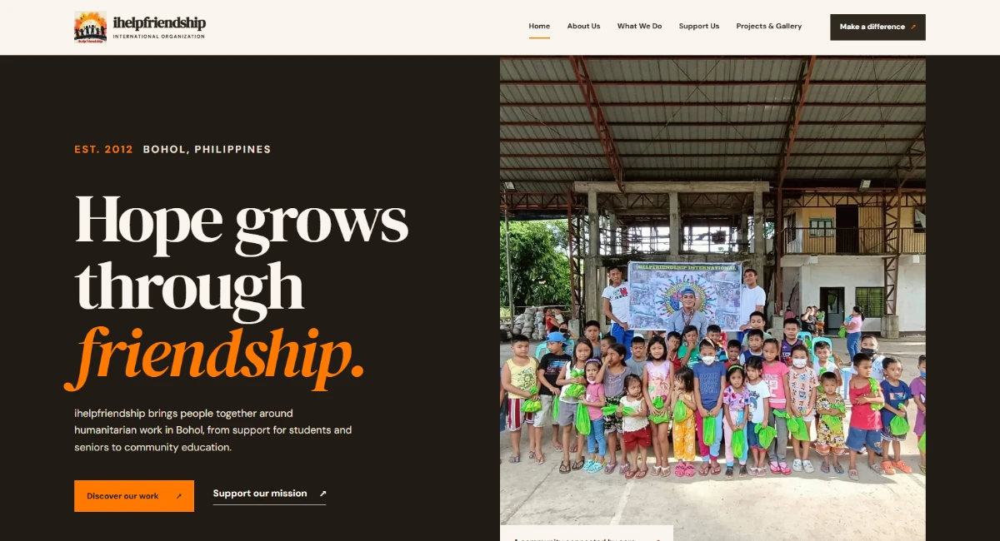

All projects
Humanitarian Organization Website
iHelp Friendship
A humanitarian organization website presenting ihelpfriendship's community work in Bohol, from support for students and seniors to education and awareness initiatives.

A clear path to community involvement.
A photography-led website connecting the organization's story, vision, community programs, project gallery, and support information through clear navigation and calls to action.